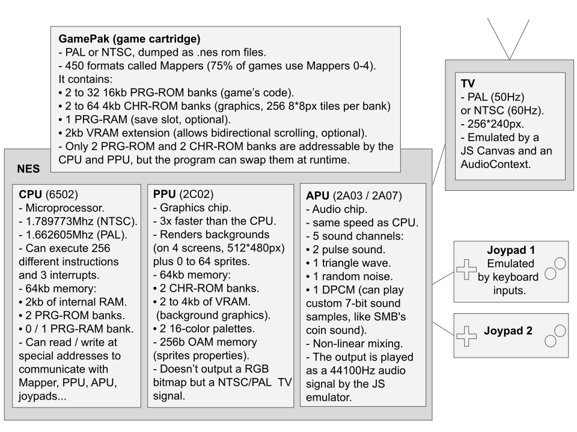

<!doctype html>
<meta charset=utf-8>
<meta name="viewport" content="width=device-width, user-scalable=no">
<html>
<head>
<link rel=stylesheet href="../style.css?v=4">
<title>Maxime Euzière</title>
</head>
<body>

<div class="wrapper">

<style>details { cursor: pointer; background: #e8e8e8; padding: 5px; border-radius: 5px; }</style>

<header></header>

<div id=menu></div>

<main>

<div class=section id=nes>
<h2>Golfing a NES emulator in JS</h2>
<h3>October 2020 - WIP</h3>
<br>

<br><br><hr><br>
<h3>Introduction</h3>
<p>Hello!<br>
Today I'm going to tell you how I'm creating the world's smallest NES emulator in JS, <a href="https://github.com/xem/jsnes-lite">JSNES-lite</a>. It is based on <a href="https://twitter.com/MaximeEuziere/status/1316455403274858501">this Twitter thread</a>.
<p>In the previous years, I've made many attempts at creating my onw NES emulator from scratch:
<br>I wrote an <a href="https://github.com/xem/nes/blob/gh-pages/cheat%20sheet.txt">emulation cheat-sheet</a> and built a <a href="https://xem.github.io/nes/">ROM decompiler and debugger</a>...
<br>
<br>

<br>
<br>but unfortunately, all the preparation and all the docs I could read (<a href="http://wiki.nesdev.com/w/index.php/NES_reference_guide">NESdev</a>, <a href="http://problemkaputt.de/everynes.htm">NO$NES</a>) weren't enough to boot a single game.
<br>The actual CPU and graphics emulation were just too tricky.
<p>So I decided to try a different approach: fork an existing (and functional) NES emulator in JS, and golf it down to just a few kilobytes.
<p>After some research, I chose the most popular one, <a href="//github.com/bfirsh/jsnes">JSNES</a>, which is already quite large:
<br>- 5411 lines of code
<br>- 191kb commented
<br>- 99.92kb minified
<br>- 21.29kb zipped
<p>... and can't acually run without its huge UI (<a href="https://github.com/bfirsh/jsnes-web">jsnes-web</a>) made in React 😱:
<br>- 1106 dependencies
<br>- 304Mb of node_modules
<br>- 1614 lines of code
<br>- 51.4kb commented
<br>- 349kb built and minified
<br>- 99.5kb zipped

<p>My goal will be to figure out what all these lines of code do exactly, and try to replicate that with the smallest possible amount of code.
<br>Keep in mind that an emulator is fractally complex. You can add accuracy and features as much as you want, it'll never really end...
<br>so I will aim for a MVP (minimum viable product) with the best support possible for commercial games, and under 10kb zipped.
<br>Let's go on a journey full of traps, surprises, reverse-engineering and arbitrary choices!

<p><i>This article contains chunks of commented code and extra explanations hidden behind dropdowns. Feel free to read or skip them.</i>

<br><br><hr><br>

<h3>The UI</h3>
<br>

<br>

<p>Let's start with the elephant in the room: the UI. What does <b>jsnes-web</b> do to weigh almost 100kb? Not so many things actually:
<br>- Initialize a 2D canvas and an AudioContext, with their framebuffers and audio buffers
<br>- Start the JSNES emulator
<br>- Load a ROM file and hand it to JSNES's ROM manager
<br>- Render the frames and play the sound samples returned by the emulator, 60 times per second
<br>- Listen to keyboard inputs and hand them to JSNES's control manager

<p>So I created a standalone HTML page that did all that in Vanilla JavaScript, while respecting JSNES's API:

<p><details>
<summary><b>HTML setup</b> (3 lines)</summary>
<pre><code class="lang-html">&lt;canvas id=canvas width=256 height=240 style="background:#000">&lt;/canvas>
<br>&lt;b>Controls&lt;/b>: arrow keys + X + C + Start + Esc
<br>&lt;input type=file id=file></code></pre>
</details>

<p><details>
<summary><b>Canvas setup</b> (106 lines => 5)</summary>
<pre><code class="lang-js">var ctx = canvas.getContext("2d");
var imageData = ctx.getImageData(0,0,256,240);
var frameBuffer = new ArrayBuffer(imageData.data.length);
var frameBuffer8 = new Uint8ClampedArray(frameBuffer);
var frameBuffer32 = new Uint32Array(frameBuffer);</code></pre>
</details>

<p><details>
<summary><b>Audio setup</b> (236 lines => 15)</summary>
<pre><code class="lang-js">var audio = new AudioContext();
var audioprocessor = audio.createScriptProcessor(512, 0, 2);
audioprocessor.connect(audio.destination);

// When the Audio processor requests new samples to play
audioprocessor.onaudioprocess = audioEvent => {

  // Ensure that we've buffered enough samples
  if(leftSamples.length > currentSample + 512){
    for(var i = 0; i &lt; 512; i++){
    
      // Output (play) the buffers in stereo
      audioEvent.outputBuffer.getChannelData(0)[i] = leftSamples[currentSample];
      audioEvent.outputBuffer.getChannelData(1)[i] = rightSamples[currentSample];
      currentSample++;
    }
  }
}
var leftSamples = [];
var rightSamples = [];
var currentSample = 0;</code></pre>
</details>

<p><details>
<summary><b>Load rom, start emulator, display new frame / play new sound samples at 60fps</b> (417 lines => 26)</summary>
<pre><code class="lang-js">file.onchange = () => {
  var fileReader = new FileReader();
  fileReader.readAsBinaryString(file.files[0]);
  fileReader.onload = () => {
    var nes = new jsnes.NES({
          
      // Display each new frame on the canvas
      onFrame: function(frameBuffer){
        var i = 0;
        for(var y = 0; y &lt; 256; ++y){
          for(var x = 0; x &lt; 240; ++x){
            i = y * 256 + x;
            frameBuffer32[i] = 0xff000000 | frameBuffer[i];
          }
        }
        imageData.data.set(frameBuffer8);
        ctx.putImageData(imageData, 0, 0);
      },
      
      // Add new audio samples to the Audio buffers
      onAudioSample: function(left, right){
        leftSamples.push(left);
        rightSamples.push(right);
      },
      
      // Pass the browser's sample rate to the emulator
      sampleRate: 44100,
    });
    
    // Send ROM to emulator
    nes.loadROM(fileReader.result);
    
    // 60 fps loop
    setInterval(nes.frame, 16);
  }
}</code></pre>
</details>

<p><details>
<summary><b>Controller</b> (453 lines => 17)</summary>
<pre><code class="lang-js">onkeydown = onkeyup = e => {
  nes[e.type == "keyup" ? "buttonUp" : "buttonDown"](
    1,
    jsnes.Controller["BUTTON_" + 
      {
        37: "LEFT",
        38: "UP",
        39: "RIGHT",
        40: "DOWN",
        88: "A", // X
        67: "B", // C
        27: "SELECT",
        13: "START"
      }[e.keyCode]
    ]
  )
}</code></pre>
</details>

<p>The original jsnes-web also features a game list and supports USB gamepads, but I don't.
<p>Anyway, when all my code is put together, it's as small as 1078b minified and 721b gzipped.

<pre style="font-size:12px;line-height:1"><code class="lang-html">&lt;canvas id=c width=256 height=240 style=background:#000>&lt;/canvas>
&lt;p>&lt;input type=file id=f>
&lt;p>&lt;b>Controls&lt;/b>: arrow keys + A + B + Start + Esc
&lt;script src=jsnes.min.js>&lt;/script>
&lt;script>e=c.getContext`2d`,o=e.getImageData(0,0,256,240),n=new ArrayBuffer(o.data.length),t=new Uint8ClampedArray(n),r=new Uint32Array(n),l=new AudioContext,s=l.createScriptProcessor(512,0,2),s.connect(l.destination),s.onaudioprocess=e=>{if(a.length>C+512)for(var n=0;n&lt;512;n++)e.outputBuffer.getChannelData(0)[n]=a[C],e.outputBuffer.getChannelData(1)[n]=T[C],C++},a=[],T=[],C=0,f.onchange=()=>{n=new FileReader,n.readAsBinaryString(f.files[0]),n.onload=()=>{f.remove(),N=new jsnes.NES({onFrame:n=>{for(l=0,s=0;s&lt;256;++s)for(A=0;A&lt;240;++A)r[l=256*s+A]=0xff000000|n[l];o.data.set(t),e.putImageData(o,0,0)},onAudioSample:(e,n)=>{a.push(e),T.push(n)},sampleRate:44100}),N.loadROM(n.result),setInterval(N.frame,16),onkeydown=onkeyup=e=>{N[e.type[5]?"buttonDown":"buttonUp"](1,jsnes.Controller[`BUTTON_`+{37:`LEFT`,38:`UP`,39:`RIGHT`,40:`DOWN`,88:`A`,67:`B`,`SELECT`,13:`START`}[e.keyCode]])}}}&lt;/script></code></pre>

<br>In other words, 140 times smaller than the original, and still fully compatible with JSNES.
<br>(A lot of that size is actually used to respect JSNES's API, so it'll be even smaller in my final version of JSNES-lite.)

<p>Here's my fork of jsnes-web: <a href="https://github.com/xem/jsnes-web">Github repo</a> / <a href="https://xem.github.io/jsnes-web/index.min.html">Demo</a>.
<br>The author of JSNES found it <a href="https://github.com/bfirsh/jsnes-web/pull/300">neat</a>!

<br><br><hr><br>

<h2>The emulator!</h2>

<br><hr><br>

<h3>The big picture</h3>

<p>I've drawn an overview of all the elements that must be handled by a NES emulator:
<br>
<br>

<br>
<p>Of course, a million details are not covered here, that's what we'll see in the following parts.

<br><br><hr><br>
<h3>How I will proceed</h3>

<p>JSNES's 191kb source code is divided in <a href="https://github.com/bfirsh/jsnes/tree/master/src">10 files</a>:
<p>- <b>controller.js</b> (27 lines, 548b) updates an array of 8 values when buttonDown(key) and buttonUp(key) are called by JSNES-web.
<br>- <b>cpu.js</b> (2024 lines, 52.7kb) has a reset() function and an emulate() function able to execute any of the CPU's 256 instructions & interrupts.
<br>- <b>mappers.js</b> (1518 lines, 37.5kb) handles reads/writes in the CPU memory and communicates with the gamepak, controllers, PPU & APU.
<br>It supports the gamepak formats (Mappers) 0-5, 7, 11, 34, 38, 66, 94, 140 and 180, for a total coverage of ~90% of all commercial games.
<br>- <b>nes.js</b> (210 lines, 4.8kb) is the emulator's entry point. It exposes a constructor NES(), a reset() function and a frame() function.
<br>Its job is to call CPU.emulate() repeatedly until the current frame is completed (every 29780.5 cycles on NTSC, or 33247.5 on PAL),
<br>and tells the APU to generate the audio samples that need to be played when this frame is displayed.
<br>- <b>papu.js</b> (1371 lines, 36.6kb) handles all the audio. It exposes three functions: reset(), setSampleRate() and clockFrameCounter().
<br>- <b>ppu.js</b> (1753 lines, 48.8kb) handles all the graphics. It exposes four functions: reset(), startFrame(), startVBlank() and endScanline().
<br>- <b>rom.js</b> (204 lines, 5.5kb) has a load() function that parses a ROM file and places its content in memory.
<br>- <b>tile.js</b> (5kb) and <b>utils.js</b> (0.6kb) handle graphics generation and copying in memories, so they can be merged with ppu.js and mappers.js. 
<br>- <b>index.js</b> is not necessary, it just loads nes.js.

<p><b>A little problem...</b>
<p>These files are quite hard to read. Not only do they lack comments and good variable naming, but they also contain a frightening amount of redundancy, absurd abstractions, unneeded complexity, backwards logic, dead code, and errors too...

<p>But I can't really complain, because despite all these problems, it's a <i>Vanilla JS</i> emulator that <i>works</i>, which is just what I need to get started!

<p><b>First steps</b>
<p>So after forking it and taking a few days to clean up a bunch of useless code and trying to make sense of the rest by reading some documentation online, I could finally start taking all these files one by one and rewriting them the way I want: clean, readable, commented, functional, accurate, fast, and as short as possible after minification.

<p>For simplicity, I'll get rid of all the JS modules, Objects and prototypes present in JSNES. All the variables and functions will be "global".
<br>Though, I know that people tend to find that quite dirty, so I'll also provide a version where everything will be contained in a self-executing function, with no global leaks.

<p><b>The scope</b>
<p>For the initial release, I'll try to limit the amount of features supported by my emulator:
<br>- 1 or 2 controllers mapped to keyboard keys (no Duck Hunt zapper, no USB gamepad...).
<br>- No support for Famicom Disc System, Arcade systems, and other peripherals.
<br>- The CPU will only emulate the 151 legal/official instructions, which is enough to run <a href="https://wiki.nesdev.com/w/index.php/CPU_unofficial_opcodes#Games_using_unofficial_opcodes">99.9% of all commercial games</a>.
<br>- The PPU will not simulate NTSC video rendering nor special video effects like greyscale or color emphasis (which are almost never used).
<br>- Support for the gamepak mappers 0-4 only, which represent about <a href="http://tuxnes.sourceforge.net/nesmapper.txt">75% of all games</a> (100% of the games you know are covered).
<br>- No debug tools, except an optional VRAM visualizer (showing the background tiles and screen viewport).
<br>- No TAS tools (save states, frame advance, keystrokes recording/playback).
<br>- Save slots will be stored in localStorage for games that support it.

<p><b>The goal</b>
<p>Then, I'll gather everything in a standalone HTML page, golf it even further, and hopefully obtain the world's smallest NES emulator.

<br>But who are my concurrents anyway? Here's my top 5:
<br>- <a href="https://github.com/takahirox/nes-js">nes-js</a> (JS emulator, standalone version: 3744 lines of code, 81kb minified, 16kb zipped)
<br>- <a href="https://github.com/bfirsh/jsnes">jsnes</a> (the most popular JS emulator, 5411 lines of code, 99.9kb minified, 21kb zipped)
<br>- <a href="https://github.com/wwssllabcd/NesEmu">nesemu1</a> (C emulator 743 lines of code, 45kb commented, 97kb compiled with SDL)
<br>- <a href="https://github.com/AndreaOrru/LaiNES">LaiNes</a> (C++ emulator in 1730 lines of code, 63kb commented, 198kb compiled with SDL2)
<br>- <a href="https://problemkaputt.de/nes.htm">no$nes</a> (windows executable only, 340kb)

<br><br><hr><br>
<h3>Golfing the rom loader</h3>
<p>There's one major rom format that dominates NES emulation, called iNes 1.0 (".nes" files), so my emulator will support it.
<br>Unfortunately, it's not very well designed, nor well used by the people who dump and share games.
<br>But to summarize, it starts with a 16-byte header that contains information about the cartridge:
<br>
<br>- Number of 16kb PRG-ROM banks (game code).
<br>- Number of 4kb CHR-ROM banks (graphics).
<br>- Presence of a 8kb PRG-RAM bank (save slot).
<br>- Nametable mirroring (background layout, allowing horizontal, vertical or bidirectional scrolling).
<br>- Mapper number (0-255). Represents the cartridge's format. Higher mapper numbers require other rom formats like iNes 2.0.
<br>- Presence of a 512b "trainer" ROM bank containing instructions specific to certain mappers.
<br>- Presence of extra ROM banks specific to arcade games.
<br>- The TV system (NTSC or PAL) is sadly not reliable in this file format, so it must be found elsewhere (<a href="http://bootgod.dyndns.org:7777/advanced.php">ROM database</a> or user input).

<p>...then the rom file contains dumps (copies) of:
<br>- the trainer (if any).
<br>- all the PRG-ROM banks.
<br>- all the CHR-ROM banks.
<br>- extra ROM banks specific to arcade games (if any).

<p>For now, let's focus on the simplest Mapper "Mapper 0", used by many famous games like DK, SMB, Ice Climbers, Excitebike, Pac-Man...
<br>These games fit all their code in less than 32kb and all their graphics in less than 8kb, so no bank swaps are necessary.

<p>In JSNES, the rom parsing and Mapper 0 handling represent:
<br>- 697 lines of code (in <a href="https://github.com/bfirsh/jsnes/blob/master/src/rom.js">rom.js</a> and <a href="https://github.com/bfirsh/jsnes/blob/master/src/mappers.js">mappers.js</a>)
<br>- 17.6kb commented
<br>- 5.3kb minified
<br>- 1.4kb zipped

<p>After rewriting it (and fixing it), my version is down to:
<br>- 106 lines of code
<br>- 10.6kb commented
<br>- 1442b minified (with verbose ver names)
<br>- 613b zipped

<details>
<summary><b>Updated rom.js, commented source code</b></summary>
<pre><code class="lang-js">// ROM manager
// ===========

ROM = {
  header: [],
  mapper: 0,
  mirroring: 0,
  trainer: 0,
  prg_rom_count: 0,
  prg_rom: [],
  chr_rom_count: 0,
  chr_rom: [[],[]],
  chr_rom_tiles: [[],[]],

  // Load a ROM file:
  load_rom: data => {
    
    var i, j, k, l;
    
    // Ensure file starts with chars "NES\x1a"
    if(!data.indexOf("NES\x1a")){
    
      // Parse ROM header (first 16 bytes)
      for(i = 0; i &lt; 16; i++){
        ROM.header[i] = data.charCodeAt(i) & 0xff;
      }
      
      // Read number of 16Kib PRG-ROM banks (byte 4)
      // The game's program is stored here
      ROM.prg_rom_count = ROM.header[4];
      
      // Read number of 8Kib CHR-ROM banks (byte 5)
      // The game's graphics are stored here in the form of 8*8px, 4-color bitmaps
      ROM.chr_rom_count = ROM.header[5] * 2;
      
      // Check if the game adds 2 extra Kib to the PPU's VRAM (byte 6, bit 4)
      // Otherwise, read mirroring layout (byte 6, bit 0)
      // 0 => vertical mirroring (bit 0 on: the game can scroll horizontally)
      // 1 => horizontal mirroring (bit 0 off: the game can scroll vertically)
      // 2 => 4-screen nametable (bit 4 on: the game can scroll horizontally and vertically)
      ROM.mirroring = (ROM.header[6] & 0b00001000) ? 2 : (ROM.header[6] & 0b0000001) ? 0 : 1;
      
      // Check if the game has at least one battery-backed PRG-RAM bank (byte 6, bit 2)
      // This is a persistent save slot that can be used to save the player's progress in a game
      // If present, it can be accessed by the CPU at the addresses $6000-$7FFF
      ROM.batteryRam = (ROM.header[6] & 0b0000010);
      
      // Check if the game contains a 512b trainer (byte 6, bit 3)
      // This bank contains subroutines executed by some Mappers
      // If present, it can be accessed by the CPU at the addresses $7000-$71FF
      ROM.trainer = (ROM.header[6] & 0b00000100);
      
      // Mapper number (byte 6, bits 5-8 >> 4 + byte 7, bits 5-8)
      ROM.mapper = (ROM.header[6] >> 4) + (ROM.header[7] & 0b11110000);
      
      // Skip header
      var offset = 16;
      
      // Skip trainer, if it's present
      if(ROM.trainer) offset += 512;
      
      // Load the PRG-ROM banks
      for(i = 0; i &lt; ROM.prg_rom_count; i++){
        ROM.prg_rom[i] = [];
        for(j = 0; j &lt; 16 * 1024; j++){
          ROM.prg_rom[i][j] = data.charCodeAt(offset++) & 0xff;
        }
      }
      
      // Load the CHR-ROM pages and prepare 256 tiles for each of them
      for(i = 0; i &lt; ROM.chr_rom_count; i++){
        ROM.chr_rom[i] = [];
        ROM.chr_rom_tiles[i] = [];
        for(j = 0; j &lt; 4 * 1024; j++){
          ROM.chr_rom[i][j] = data.charCodeAt(offset++) & 0xff;
        }

        for(j = 0; j &lt; 256; j++){
          ROM.chr_rom_tiles[i][j] = { pixels: [] };
        }
      }
    }
  }
}</code></pre></details>

<br>
<details>
<summary><b>Updated mappers.js, commented source code</b></summary>
<pre><code class="lang-js">// Mapper 0
// ========

var Mapper = {
  
  // Load ROM's content in memory
  load_rom: () => {
    Mapper.load_prg_rom();
    Mapper.load_chr_rom();
  },
  
  // Load PRG-ROM banks in CPU memory
  load_prg_rom: () => {
    
    // If there are two banks or more, the first two banks are placed at addresses $8000 and $C000
    if(ROM.prg_rom_count > 1){
      Mapper.load_prg_rom_bank(0, 0x8000);
      Mapper.load_prg_rom_bank(1, 0xC000);
    }

    else {
      // If there's only one bank, it's mirrored at both locations (ex: Donkey Kong, Galaxian)
      Mapper.load_prg_rom_bank(0, 0x8000);
      Mapper.load_prg_rom_bank(0, 0xC000);
    }
  },

  // Load CHR-ROM pages in PPU memory
  load_chr_rom: () => {
    
    // If there are two pages or more, the first ones are placed at addresses $0000 and $1000
    if(ROM.chr_rom_count > 1){
      Mapper.load_chr_rom_bank(0, 0x0000);
      Mapper.load_chr_rom_bank(1, 0x1000);
    }
    
    // If there's only one page, it's mirrored at both locations
    // If the game has no CHR-ROM banks, do nothing (CHR-RAM is used instead)
    else if(ROM.chr_rom_count > 0){
      Mapper.load_chr_rom_bank(0, 0x0000);
      Mapper.load_chr_rom_bank(0, 0x1000);
    }
  },
  
  // Load a PRG-ROM bank in CPU memory
  load_prg_rom_bank: (bank, address) => {
    Mapper.copy_array(ROM.prg_rom[bank], CPU.mem, address);
  },

  // Load a CHR-ROM page in PPU memory + the corresponding tiles
  load_chr_rom_bank: (bank, address) => {
    if(ROM.chr_rom_count > 0){
      Mapper.copy_array(ROM.chr_rom[bank], PPU.mem, address);
    }
  },
  
  // Copy the values of an array into a specific position in another array
  copy_array: (src, dest, address) => {
    for(var i = 0; i &lt; src.length; i++){
      dest[address + i] = src[i];
    }
  },
}</code></pre></details>

<p><details open><summary><b>Minified</b></summary>
<pre style="font-size:12px;line-height:1"><code class="lang-js">ROM={header:[],mapper:0,mirroring:0,trainer:0,prg_rom_count:0,prg_rom:[],chr_rom_count:0,chr_rom:[[],[]],chr_rom_tiles:[[],[]],load_rom:r=>{var o,_;if(!r.indexOf("NES")){for(o=0;o&lt;16;o++)ROM.header[o]=255&r.charCodeAt(o);ROM.prg_rom_count=ROM.header[4],ROM.chr_rom_count=2*ROM.header[5],ROM.mirroring=8&ROM.header[6]?2:1&ROM.header[6]?0:1,ROM.batteryRam=2&ROM.header[6],ROM.trainer=4&ROM.header[6],ROM.mapper=(ROM.header[6]>>4)+(240&ROM.header[7]);var a=16;for(ROM.trainer&&(a+=512),o=0;o&lt;ROM.prg_rom_count;o++)for(ROM.prg_rom[o]=[],_=0;_&lt;16384;_++)ROM.prg_rom[o][_]=255&r.charCodeAt(a++);for(o=0;o&lt;ROM.chr_rom_count;o++){for(ROM.chr_rom[o]=[],ROM.chr_rom_tiles[o]=[],_=0;_&lt;4096;_++)ROM.chr_rom[o][_]=255&r.charCodeAt(a++);for(_=0;_&lt;256;_++)ROM.chr_rom_tiles[o][_]={pixels:[]}}}}};

Mapper={load_rom:()=>{Mapper.load_prg_rom(),Mapper.load_chr_rom()},load_prg_rom:()=>{ROM.prg_rom_count>1?(Mapper.load_prg_rom_bank(0,32768),Mapper.load_prg_rom_bank(1,49152)):(Mapper.load_prg_rom_bank(0,32768),Mapper.load_prg_rom_bank(0,49152))},load_chr_rom:()=>{ROM.chr_rom_count>1?(Mapper.load_chr_rom_bank(0,0),Mapper.load_chr_rom_bank(1,4096)):ROM.chr_rom_count>0&&(Mapper.load_chr_rom_bank(0,0),Mapper.load_chr_rom_bank(0,4096))},load_prg_rom_bank:(r,o)=>{Mapper.copy_array(ROM.prg_rom[r],CPU.mem,o)},load_chr_rom_bank:(r,o)=>{ROM.chr_rom_count>0&&Mapper.copy_array(ROM.chr_rom[r],PPU.mem,o)},copy_array:(r,o,_)=>{for(var a=0;a&lt;r.length;a++)o[_+a]=r[a]}};</code></pre>
</details>

<p><b>Bonus: A bit of cleanup</b>
<br>Before continuing with the biggest parts, I took a bit of time to understand and rewrite properly two files from JSNES:
<br>- <a href="https://github.com/bfirsh/jsnes/blob/master/src/tile.js">tile.js</a>, the tile/sprite display algorithm (before: 2.5kb zipped, after: 420b zipped).
<br>- <a href="https://github.com/bfirsh/jsnes/blob/master/src/nes.js">nes.js</a>, the emulator API: init(), frame(), reset()... (before: 1.1kb zipped, after: 566b zipped).
<br>But we'll get back to them later.

<br><br><hr><br>
<h3>Golfing the CPU</h3>


<br>

<p>The NES is powered by a CPU called Ricoh 6502, based on the famous MOS 6502 chip.
<br>This CPU can execute 56 different instructions (or "opcodes"), each of them is available in one or many "addressing modes" (there are 13 addressing modes representing different ways to fetch data in the CPU's 64kb memory), for a total of 256 instructions ($00 to $FF in hex).

<br>
<br>


<p>It can also execute 3 special routines called "interrupts" on special occasions (console reset, end of frame, or an external signal).
<p>It has:
<br>- 3 general purpose registers (A, X, Y),
<br>- a stack pointer (S),
<br>- a program counter (PC),
<br>- Status flags (Carry, Zero, Interrupt disable, Decimal, oVerflow, Negative) placed in a dedicated register (P)
<p>and has access to a 64kb memory containing:
<br>- the internal RAM (2kb, including the stack),
<br>- a bunch of I/O registers (to communicate with the Mapper, the PPU, the APU and the Joypads),
<br>- the ROM banks exposed by the cartridge: trainer (if present), PRG-RAM (save slot, if present), and two 16kb PRG-ROM banks containing the game's code.
 
<p>Nintendo modified the original 6502 chip a little to remove some features they didn't need and merge it with the console's audio chip.
<br>Besides that, all that it does, a real 6502 can do it too. And luckily, a lot of documentation and implementations exist online, like:
<p>- <a href="https://www.masswerk.at/6502/6502_instruction_set.html">masswerk doc</a>, detailing the cycles and flags used by each instruction,
<br>- <a href="https://wiki.nesdev.com/w/index.php/CPU">Nesdev</a>, explaining all the rest,
<br>- <a href="https://github.com/6502/js6502/blob/master/6502.js">6502.js</a>, a standalone JS simulator (13kb minified, 3.6kb zipped),
<br>- <a href="https://github.com/bfirsh/jsnes/blob/master/src/cpu.js">JSNES's cpu.js</a>, of course (27kb minified, 4.7kb zipped),
<br>- and this very interesting NES emulator in C called <a href="https://bisqwit.iki.fi/jutut/kuvat/programming_examples/nesemu1/nesemu1.cc">nesemu1</a>, specifically aiming for a small size. (It's "<a href="https://www.youtube.com/watch?v=y71lli8MS8s">coded in 15 minutes</a>" too)
<p>In this emulator, the instructions are implemented/encoded in 56 lines and 1054b zipped, and the whole CPU takes about 2.5kb zipped:

<details>
<summary><b>nesemu1's CPU instructions encoding</b></summary>
<pre style="font-size:12px;line-height:1"><code class="lang-js">t("                                !", addr = 0xFFFA) // NMI vector location
t("                                *", addr = 0xFFFC) // Reset vector location
t("!                               ,", addr = 0xFFFE) // Interrupt vector location
t("zy}z{y}zzy}zzy}zzy}zzy}zzy}zzy}z ", addr = RB(PC++))
t("2 yy2 yy2 yy2 yy2 XX2 XX2 yy2 yy ", d = X) // register index
t("  62  62  62  62  om  om  62  62 ", d = Y)
t("2 y 2 y 2 y 2 y 2 y 2 y 2 y 2 y  ", addr=u8(addr+d); d=0; tick())              // add zeropage-index
t(" y z!y z y z y z y z y z y z y z ", addr=u8(addr);   addr+=256*RB(PC++))       // absolute address
t("3 6 2 6 2 6 286 2 6 2 6 2 6 2 6 /", addr=RB(c=addr); addr+=256*RB(wrap(c,c+1)))// indirect w/ page wrap
t("  *Z  *Z  *Z  *Z      6z  *Z  *Z ", Misfire(addr, addr+d)) // abs. load: extra misread when cross-page
t("  4k  4k  4k  4k  6z      4k  4k ", RB(wrap(addr, addr+d)))// abs. store: always issue a misread
t("aa__ff__ab__,4  ____ -  ____     ", t &= A) // Many operations take A or X as operand. Some try in
t("                knnn     4  99   ", t &= X) // error to take both; the outcome is an AND operation.
t("                9989    99       ", t &= Y) // sty,dey,iny,tya,cpy
t("                       4         ", t &= S) // tsx, las
t("!!!!  !!  !!  !!  !   !!  !!  !!/", t &= P.raw|pbits; c = t)// php, flag test/set/clear, interrupts
t("_^__dc___^__            ed__98   ", c = t; t = 0xFF)        // save as second operand
t("vuwvzywvvuwvvuwv    zy|zzywvzywv ", t &= RB(addr+d)) // memory operand
t(",2  ,2  ,2  ,2  -2  -2  -2  -2   ", t &= RB(PC++))   // immediate operand
t("    88                           ", P.V = t & 0x40; P.N = t & 0x80) // bit
t("    nink    nnnk                 ", sb = P.C)       // rol,rla, ror,rra,arr
t("nnnknnnk     0                   ", P.C = t & 0x80) // rol,rla, asl,slo,[arr,anc]
t("        nnnknink                 ", P.C = t & 0x01) // lsr,sre, ror,rra,asr
t("ninknink                         ", t = (t &lt;&lt; 1) | (sb * 0x01))
t("        nnnknnnk                 ", t = (t >> 1) | (sb * 0x80))
t("                 !      kink     ", t = u8(t - 1))  // dec,dex,dey,dcp
t("                         !  khnk ", t = u8(t + 1))  // inc,inx,iny,isb
t("kgnkkgnkkgnkkgnkzy|J    kgnkkgnk ", WB(addr+d, t))
t("                   q             ", WB(wrap(addr, addr+d), t &= ((addr+d) >> 8))) // [shx,shy,shs,sha?]
t("rpstljstqjstrjst - - - -kjstkjst/", tick()) // nop,flag ops,inc,dec,shifts,stack,transregister,interrupts
t("     !  !    !                   ", tick(); t = Pop())                        // pla,plp,rti
t("        !   !                    ", RB(PC++); PC = Pop(); PC |= (Pop() &lt;&lt; 8)) // rti,rts
t("            !                    ", RB(PC++))  // rts
t("!   !                           /", d=PC+(op?-1:1); Push(d>>8); Push(d))      // jsr, interrupts
t("!   !    8   8                  /", PC = addr) // jmp, jsr, interrupts
t("!!       !                      /", Push(t))   // pha, php, interrupts
t("! !!  !!  !!  !!  !   !!  !!  !!/", t = 1)
t("  !   !                   !!  !! ", t &lt;&lt;= 1)
t("! !   !   !!  !!       !   !   !/", t &lt;&lt;= 2)
t("  !   !   !   !        !         ", t &lt;&lt;= 4)
t("   !       !           !   !____ ", t = u8(~t)) // sbc, isb,      clear flag
t("`^__   !       !               !/", t = c | t)  // ora, slo,      set flag
t("  !!dc`_  !!  !   !   !!  !!  !  ", t = c & t)  // and, bit, rla, clear/test flag
t("        _^__                     ", t = c ^ t)  // eor, sre
t("      !       !       !       !  ", if(t)  { tick(); Misfire(PC, addr = s8(addr) + PC); PC=addr; })
t("  !       !       !       !      ", if(!t) { tick(); Misfire(PC, addr = s8(addr) + PC); PC=addr; })
t("            _^__            ____ ", c = t; t += A + P.C; P.V = (c^t) & (A^t) & 0x80; P.C = t & 0x100)
t("                        ed__98   ", t = c - t; P.C = ~t & 0x100) // cmp,cpx,cpy, dcp, sbx
t("aa__aa__aa__ab__ 4 !____    ____ ", A = t)
t("                    nnnn 4   !   ", X = t) // ldx, dex, tax, inx, tsx,lax,las,sbx
t("                 !  9988 !       ", Y = t) // ldy, dey, tay, iny
t("                   4   0         ", S = t) // txs, las, shs
t("!  ! ! !!  !   !       !   !   !/", P.raw = t & ~0x30) // plp, rti, flag set/clear
t("wwwvwwwvwwwvwxwv 5 !}}||{}wv{{wv ", P.N = t & 0x80)
t("wwwv||wvwwwvwxwv 5 !}}||{}wv{{wv ", P.Z = u8(t) == 0)
t("             0                   ", P.V = (((t >> 5)+1)&2))         // [arr]</code></pre>
</details>

<p>This packing technique is pretty smart, because it lists all the micro-instructions that can be performed by the CPU in the right order: fetching some data, transforming it, storing it somewhere, jump to another address, etc.
<br>Each of these micro-instructions can be performed by one or many of the 259 official instructions/interrupts supported by the CPU.
<br>So nesemu1 encodes on each line:
<br>- a 33-char string that, when converted into binary, represents which instructions use it (from 0 to 259).
<br>- the C code simulating this micro-instruction.
<!--<br>And the function t() unpacks that into an optimized matrix of functions executeable for each opcode.-->

<p><b>Example:</b> the 18th micro-instruction performs an AND binary operation between a register and a byte read in memory:

<p><pre><code class="lang-js">t("vuwvzywvvuwvvuwv    zy|zzywvzywv ", t &= RB(addr+d))
// |_______________________________|   |_____________|
//     instructions using this          corresponding
//       micro-instruction                  C code</code></pre>

<p>So every time an instruction must be run, the emulator checks the encoded string in each of the 56 micro-instructions to see if it's relevant, and if it is, the code on the right is evaluated.

<p>I decoded the data from this file, to make this table (click to enlarge):
<br>
<br>
<a href="images/nes/6.jpg"></a>
<br>

<p>In nesemu1, this 56 x 33-chars ASCII encoding takes 1848 bytes.
<br>I found a way to improve it, by transposing the table:
<br>

<br>
<a href="images/nes/7.jpg"></a>
<br>

<p>When it's presented like that, the table shows which of the 56-micro instructions are used by each of the 259 real instructions,
<br>and it's interesting because it yields much more redundancy in the binary data than it did when it was the other way around.
<br>This redundancy can be exploited by replacing each repeated byte with a smaller binary number.
<br>(there are 64 different 1-byte patterns in total, so each of them can be encoded on 6 bits, reducing their size by 20%).
<br>In the end, after doing these optimizations and a bit of cleanup, my re-encoding fits in 259 x 5 = 1295 bytes...

<p>But I also have the actual JS source code to implement, and it takes some space:
<p>- <a href="https://twitter.com/MaximeEuziere/status/1320792142235770880">3.3kb</a> if I implement each micro-instruction.
<br>- <a href="https://twitter.com/MaximeEuziere/status/1320792139069071365">8.5kb</a> if I implement the 259 instructions directly in JS (as 13 addressing modes + 52 reuseable instructions).
<br>In both cases, that's too much.

<p><b>I had to find something better!</b>

<p>After a week of head-scratching, I finally found a way to implement the instructions that takes very little space *and* compresses very well.
<br>Actually, I decided to make it entirely standalone, and challenged myself to fit it in 1kb!

<p>First, I initialized all the globals (memory, registers) used by the CPU, and wrote a few useful helpers: 

<details>
<summary><b>CPU globals and helpers</b></summary>
<pre><code class="lang-js">// Globals
// -------

// 16kb memory
// Each chunk of 256 bytes in memory is called a page
// The first chunk ($00-$FF) is called Zero page and is easier/faster to access
m = [

  // Registers
  A =           // accumulator
  X =           // X
  Y =           // Y
  S =           // stack pointer (also called SP)
  PC =          // program counter (address of next instruction)
  P =           // status register (flags on bytes 0-7: C=0, Z=0, I=1, D=0, B=0, 1, V=0, N=0)

  // Other globals

  t,            // temp var
  o,            // opcode value
  a,            // operand address
  p,            // operand value
  c = 0         // cycle counter
],


// Helpers
// -------

// Read a byte from memory. (costs 1 cycle)
// The address is wrapped between $0000 and $FFFF
r = v => m[c++, v % 0x10000],

// Write a byte in memory. (costs 1 cycle)
w = (v, w) => m[c++, v % 0x10000] = w,

// Update N and Z status flags:
// - The value v is clamped on 8 bits and returned
// - The Zero flag (bit 1 of P) is set if v is zero, otherwise it's cleared
// - The Negative flag (bit 7 of P) is set if byte 7 of v is 1, otherwise it's cleared
F = v => (
  Z = (v &= 255) &lt; 1,
  N = v >> 7,
  v
),

// Update the flags values according to the status register P
f = v => (
  C = v & 1,
  Z = (v>>1) & 1,
  I = (v>>2) & 1,
  D = (v>>3) & 1,
  B = (v>>4) & 1,
  V = (v>>6) & 1,
  N = v>>7
),

// Set all flags on load
f(P = 0x24),

// Push on Stack
// Write at address $100 + S, decrement S, wrap it between $00 and $FF
h = v => (
  w(256 + S--, v),
  S &= 255
),

// Pull from stack
// Increment S, wrap it between $00 and $FF, read at address $100 + S
g = v => r(256 + (S = (255 & (S+1))))</code></pre>
</details>

<p>Then, I removed one quarter of the opcodes that are <a href="https://wiki.nesdev.com/w/index.php/CPU_unofficial_opcodes">not officially supported</a> nor used by 99.9% of commercial NES games.

<p>Then for the 192 remaining ones, the idea is to generate a function that do something like that:
<pre><code class="lang-js">Opcodes[n] = function(){
  var targetAddress = myAddressingMode(); // execute the right addressing mode for opcode n
  myopcode(targetAddress);                // execute the right operation for opcode n
}</code></pre>

<br>So I took the 10 main addressing modes, numbered them from 0 to 9, and made a 192b string representing which is used by each opcode.
<br>The letter "Z" is a dummy character that indicates that the operand is either implicit or the Accumulator register.
<br>A 13th addressing mode exists, but it's only used by a single opcode, so it will be implemented separately.

<pre><code class="lang-c">020666Z0Z77713Z444Z8Z999
720666Z0Z77713Z444Z8Z999
Z20666Z0Z77713Z444Z8Z999
Z20666Z0Z77713Z444Z8Z999
020666Z0Z77713Z445Z8Z998
020666Z0Z77713Z445Z8Z998
020666Z0Z77713Z444Z8Z999
020666Z0Z77713Z444Z8Z999</code></pre>
(Only 151 of these are legal opcodes, the others were chosen to create as much redundancy as possible, to improve compression.)

<p>Then I took many days to understand, implement, document and golf these addressing modes in the most compressible way I could find:

<details>
<summary><b>addressing modes implementation</b></summary>
<pre><code class="lang-js">myAddressingMode = () => {
  (
    // Addressing modes
    // ----------------

    // Some opcodes require an address in memory
    // This address can be computed in 11 different ways
    // The 10 main ones are implemented here, the 11th is included in the last instruction (JMP ind)
    // The order and implementations below are optimized for a better gzip compression
    
    // When this function is called:
    // - PC represents the current opcode's address
    // - o is the opcode's value
    // - a equals PC+1
    // - p is the value stored at the address PC+1
    // - c (the cycle counter) equals 2 because two memory reads have already been done (o and p)

    // "0": Immediate:
    // The target address is PC+1, already stored in a
    // Opcode size: 2 bytes
    // Cycles total: 2
    // Cycles addr.: -1 (1 cycle is removed because the first p fetch is redundant, the instruction has to read it again)
    // Cycles opc. : 1
    "c--,PC++;"

    // "1": Relative:
    // (only used for branching)
    // The target address (between PC-128 and PC+127) = PC + signed offset stored in p
    // Opcode size: 2 bytes
    // Cycles total: 2 (no branch) / 3 (branch on same page) / 4 (branch on another page)
    // Cycles addr.: 0
    // Cycles opc. : 0-2
    + "a=a+p-256*(p>>7),PC++;"

    // "2": Indexed indirect X
    // The target address is absolute and stored at a zero page address which is stored at PC + 1 + X
    // Opcode size: 2 bytes
    // Cycles total: 6 (read or write)
    // Cycles addr.: 3
    // Cycles opc. : 1
    + "a=r(p+X&255)+256*r(p+X+1&255),PC++,c++;"

    // "3": Indirect indexed Y
    // The target address is absolute and stored at a zero page address which is stored at PC+1, then Y is added to it
    // Opcode size: 2 bytes
    // Cycles total: 5* (read) / 6 (write)
    // Cycles addr.: 2-3
    // Cycles opc. : 0-1
    // * Cross-page read (if address and address + Y are on different pages) costs 1 extra cycle
    + "a=r(p)+256*r(p+1&255)+Y,c+=a-Y>>8&lt;a>>8||o>>4==9,PC++;"

    // "4": Zero page X
    // The target address is equal to zero page address (stored at PC+1) + X, wrapping between $00 and $FF
    // Opcode size: 2 bytes
    // Cycles total: 3 (BIT) / 4 (read or write) / 6 (read + write)
    // Cycles addr.: 1
    // Cycles opc. : 0-2
    + "a=r(a)+X&255,PC++;"

    // "5": Zero page Y
    // The target address is equal to zero page address (stored at PC+1) + Y, wrapping between $00 and $FF
    // Opcode size: 2 bytes
    // Cycles total: 4 (read or write)
    // Cycles addr.: 1
    // Cycles opc. : 1
    + "a=r(a)+Y&255,PC++;"

    // "6": Zero page
    // The target address (between $00 and $FF) is stored in p
    // Opcode size: 2 bytes
    // Cycles total: 3 (read or write) / 5 (read + write)
    // Cycles addr.: 0
    // Cycles opc. : 1-3
    + "a=p,PC++;"

    // "7": Absolute
    // The target address is stored at PC+1 (low byte) and PC+2 (high byte)
    // Opcode size: 3 bytes
    // Cycles total: 3 (JMP) / 4 (read or write) / 6 (read + write or JSR)
    // Cycles addr.: 1
    // Cycles opc. : 0-3
    + "a=p+256*r(PC+=2);"

    // "8": Absolute Y
    // The target address is equal to absolute address (stored at PC+1 and PC+2) + Y
    // Opcode size: 3 bytes
    // Cycles total: 4* (read) / 5 (write)
    // Cycles addr.: 1-2
    // Cycles opc. : 0-2
    // * Cross-page read (if address and address + Y are on different pages) costs 1 extra cycle
    + "t=p+256*r(PC+=2),c+=t>>8&lt;t+Y>>8||o>>4==9,a=t+Y;"

    // "9": Absolute X
    // The target address is equal to absolute address (stored at PC+1 and PC+2) + X
    // Opcode size: 3 bytes
    // Cycles total: 4* (read) / 5 (write) / 7 (read + write)
    // Cycles addr.: 1-2
    // Cycles opc. : 0-4
    // * Cross-page read (if address and address + X are on different pages) costs 1 extra cycle
    + "t=p+256*r(PC+=2),c+=t>>8&lt;t+X>>8||o>>4==9||(15&o)>13,a=t+X"

    // "Z": implicit or Accumulator
    // The target is either a flag or a CPU register (no need to compute an address)
    // (When a "Z" is read, the generated JavaScript code will just contain "undefined;")
    // Opcode size: 1 byte (no need to increment PC)
    // Cycles total: 2-7
    // Cycles addr.: 0
    // Cycles opc. : 0-5
    + ""

  // Make an array from this string
  ).split(";")

  // Fetch the right addressing mode for the current opcode (ignore illegal opcode where o % 4 == 3):
  // (The string below is optomized for compression: the illegal opcodes are assigned characters that create extra repetitions)
  [
    (
       "020666Z0Z77713Z444Z8Z999"
      +"720666Z0Z77713Z444Z8Z999"
      +"Z20666Z0Z77713Z444Z8Z999"
      +"Z20666Z0Z77713Z444Z8Z999"
      +"020666Z0Z77713Z445Z8Z998"
      +"020666Z0Z77713Z445Z8Z998"
      +"020666Z0Z77713Z444Z8Z999"
      +"020666Z0Z77713Z444Z8Z999"
    )[o-(o>>2)]
  ]
}</code></pre>
</details>


<p>I did the same with the 52 official opcodes, turned into an alphabet of printable ASCII chars ranging from " " to "[" :
<pre><code class="lang-c">PI#PI#KIDPI#=I#PI#1IDPI#
E6%)6%M6$)6%;6%E6%F6%E6%
NB'NB'JB&ZB'@B'NB'4B'NB'
Y90Y90L9*[90>90Y90290Y90
VRSVRS-zXVRSORSVRSWR VRS
/5A/5AQ5U/5A:5A/5AH5T/5A
"7C"7C.7("7C?7C"7C37C"7C
!8+!8+,8z!8+&lt;8+!8+G8+!8+</code></pre>

<p>And took a few weeks to implement, golf and reorder them many times until I reached my goal:

<details>
<summary><b>Opcodes implementation</b></summary>
<pre><code class="lang-js">myOpcode = (a) => {
  // Instructions
  // ------------

  // There are 56 official instructions, performing operations in memory and/or in the registers
  // When this function is called:
  // - a represents the operand's address in memory (if any)
  // - c is the cycle counter (incremented by 1-5 during the prefetch and the addressing)
  // Some instructions use extra cycles:
  // *  : cross-page when fetching the address costs 1 extra cycle
  // ** : Same-page branch (PC+2>>8 == a>>8) costs 1 extra cycle. Cross-page branch costs 2 extra cycles
  // ***: Instructions that read, modify and write a value in memory (+ JSR/RTI/RTS/PLA/PLP) cost 1 to 2 extra cycles
  // The order and implementations below are also optimized for a better gzip compression
  // Also, some instructions were splitted in two if they target either the memory or the Accumulator register (ROR, ROL, LSR, ASL)

  + (
  
    // " ": TXS (transfer X to stack pointer)
    // Stack pointer = X
    // Addressing:   imp
    // Opcode:       9A
    // Cycles total: 2
    // Cycles addr.: 0
    // Cycles opc. : 0
    "S=X;"
    
    // "!": CPX (compare memory and X)
    // N, Z and C are set with the result of X minus a byte in memory
    // Flag C is set if there's no borrow
    // Addressings:  imm, zpg, abs
    // Opcodes:      E0,  E4,  EC
    // Cycles total: 2,   3,   4
    // Cycles addr.: -1,  0,   1
    // Cycles opc. : 1,   1,   1
    + "p=r(a),C=X-p>=0,F(X-p);"

    // '"': CPY (compare memory and Y)
    // N, Z and C are set with the result of Y minus a byte in memory
    // Flag C is set if there's no borrow
    // Addressings:  imm, zpg, abs
    // Opcodes:      C0,  C4,  CC
    // Cycles total: 2,   3,   4
    // Cycles addr.: -1,  0,   1
    // Cycles opc. : 1,   1,   1
    + "p=r(a),C=Y-p>=0,F(Y-p);"

    // "#": ASL (shift left)
    // A byte in memory is left shifted. Flags: N, Z, C
    // The shifted-out bit 7 is saved in C
    // Addressings:  zpg, zpgX, abs, absX
    // Opcodes:      06,  16,   0E,  1E
    // Cycles total: 5,   6,    6,   7
    // Cycles addr.: 0,   1,    1,   2
    // Cycles opc. : 3,   3,    3,   3 (***)
    + "p=r(a),C=p>>7,w(a,F(2*p)),c++;"

    // "$": ROL A (rotate left accumulator)
    // Rotate left A. Same as left shift but C flag is put into bit 0. Flags: N, Z, C
    // The shifted-out bit 7 is saved in C
    // Addressing:   A
    // Opcode:       2A
    // Cycles total: 2
    // Cycles addr.: 0
    // Cycles opc. : 0
    + "C=A>>7,A=F(2*A+(1&P));"

    // "%": ROL (rotate left)
    // Rotate left a byte in memory. Same as left shift but C flag is put into bit 0. Flags: N, Z, C
    // The shifted-out bit 7 is saved in C
    // Addressings:  zpg, zpgX, abs, absX
    // Opcodes:      26,  36,   2E,  3E
    // Cycles total: 5,   6,    6,   7
    // Cycles addr.: 0,   1,    1,   2
    // Cycles opc. : 3,   3,    3,   3 (***)
    + "p=r(a),C=p>>7,w(a,F(2*p+(1&P))),c++;"

    // "&": LSR A (shift right accumulator)
    // A is shifted right. Flags: N, Z, C
    // The shifted-out bit 0 is saved in C
    // Addressing:   A
    // Opcode:       4A
    // Cycles total: 2
    // Cycles addr.: 0
    // Cycles opc. : 0
    + "C=1&A,A=F(A>>1);"

    // "'": LSR (shift right)
    // A or a byte in memory is shifted right. Flags: N, Z, C
    // The shifted-out bit 0 is saved in C
    // Addressings:  zpg, zpgX, abs, absX
    // Opcodes:      46,  56,   4E,  5E
    // Cycles total: 5,   6,    6,   7
    // Cycles addr.: 0,   1,    1,   2
    // Cycles opc. : 3,   3,    3,   3 (***)
    + "p=r(a),C=1&p,w(a,F(p>>1)),c++;"

    // "(": DEX (decrement X)
    // X is decremented. Flags: N, Z
    // Addressing:   imp
    // Opcode:       CA
    // Cycles total: 2
    // Cycles addr.: 0
    // Cycles opc. : 0
    + "X=F(X-1);"

    // ")": BIT (test bits in memory)
    // N and V = bits 7 and 6 of operand. Z is set if operand AND A is not zero. Flags: N, Z, V
    // Addressings:  zpg, abs
    // Opcodes:      24,   2C
    // Cycles total: 3,    4
    // Cycles addr.: 0,    1
    // Cycles opc. : 1,    1
    + "p=r(a),F(p&A),N=p>>7&1,V=p>>6&amp;1;"

    // "*": ROR A (rotate right accumulator)
    // Rotate right A or a byte in memory. Same as left shift but C flag is put into bit 7. Flags: N, Z, C
    // The shifted-out bit 0 is saved in C
    // Addressing:   A
    // Opcode:       6A
    // Cycles total: 2
    // Cycles addr.: 0
    // Cycles opc. : 0
    + "C=1&A,A=F((A>>1)+128*(1&P));"

    // "+": INC (increment memory)
    // A byte in memory is incremented. Flags: N, Z
    // Addressings:  zpg, zpgX, abs, absX
    // Opcodes:      E6,  F6,   EE,  FE
    // Cycles total: 5,   6,    6,   7
    // Cycles addr.: 0,   1,    1,   2
    // Cycles opc. : 3,   3,    3,   3 (***)
    + "w(a,F(r(a)+1)),c++;"

    // ",": INX (increment X)
    // X is incremented. Flags: N, Z
    // Addressing:   imp
    // Opcode:       E8
    // Cycles total: 2
    // Cycles addr.: 0
    // Cycles opc. : 0
    + "X=F(X+1);"

    // "-": DEY (decrement Y)
    // Y is decremented. Flags: N, Z
    // Addressing:   imp
    // Opcode:       88
    // Cycles total: 2
    // Cycles addr.: 0
    // Cycles opc. : 0
    + "Y=F(Y-1);"

    // ".": INY (increment Y)
    // Y is incremented. Flags: N, Z
    // Addressing:   imp
    // Opcode:       C8
    // Cycles total: 2
    // Cycles addr.: 0
    // Cycles opc. : 0
    + "Y=F(Y+1);"

    // "/": LDY (load Y with memory)
    // Y = a byte from memory. Flags: N, Z
    // Addressings:  imm, zpg, zpgX, abs, absX
    // Opcodes:      A0,  A4,  B4,   AC,  BC
    // Cycles total: 2,   3,   4,    4,   4*
    // Cycles addr.: -1,  0,   1,    1,   1*
    // Cycles opc. : 1,   1,   1,    1,   1
    + "Y=F(r(a));"

    // 0: ROR (rotate right)
    // Rotate right a byte in memory. Same as left shift but C flag is put into bit 7. Flags: N, Z, C
    // The shifted-out bit 0 is saved in C
    // Addressings:  zpg, zpgX, abs, absX
    // Opcodes:      66,  76,   6E,  7E
    // Cycles total: 5,   6,    6,   7
    // Cycles addr.: 0,   1,    1,   2
    // Cycles opc. : 3,   3,    3,   3 (***)
    + "p=r(a),C=1&p,w(a,F((p>>1)+128*(1&P))),c++;"

    // "1": CLC (clear carry flag)
    // C is set to 0
    // Addressing:   imp
    // Opcode:       18
    // Cycles total: 2
    // Cycles addr.: 0
    // Cycles opc. : 0
    + "C=0;"

    // "2": SEI  (set interrupt disable flag)
    // I is set to 1
    // Addressing:   imp
    // Opcode:       78
    // Cycles total: 2
    // Cycles addr.: 0
    // Cycles opc. : 0
    + "I=1;"

    // "3": CLD (clear decimal flag)
    // D is set to 0
    // Addressing:   imp
    // Opcode:       D8
    // Cycles total: 2
    // Cycles addr.: 0
    // Cycles opc. : 0
    + "D=0;"

    // "4": CLI (clear interrupt disable flag)
    // I is set to 0
    // Addressing:   imp
    // Opcode:       58
    // Cycles total: 2
    // Cycles addr.: 0
    // Cycles opc. : 0
    + "I=0;"

    // "5": LDA (load accumulator with memory)
    // A = a byte from memory. Flags: N, Z
    // Addressings:  imm, zpg, zpgX, abs, absX, absY, indX, indY
    // Opcodes:      A9,  A5,  B5,   AD,  BD,   B9,   A1,   B1
    // Cycles total: 2,   3,   4,    4,   4*,   4*,   6,    5*
    // Cycles addr.: -1,  0,   1,    1,   1*,   1*    3,    3*
    // Cycles opc. : 1,   1,   1,    1,   1,    1,    1,    1
    + "A=F(r(a));"

    // "6": AND: (AND memory and accumulator)
    // A = A AND a byte in memory. Flags: N, Z
    // Addressings:  imm, zpg, zpgX, abs, absX, absY, indX, indY
    // Opcodes:      29,  25,  35,   2D,  3D,   39,   21,   31
    // Cycles total: 2,   3,   4,    4,   4*,   4*,   6,    5*
    // Cycles addr.: -1,  0,   1,    1,   1*,   1*    3,    3*
    // Cycles opc. : 1,   1,   1,    1,   1,    1,    1,    1
    + "A=F(r(a)&A);"
    
    // "7": CMP (compare memory and accumulator)
    // N, Z and C are set with the result of A - a byte in memory
    // Flag C is set if there's no borrow
    // Addressings:  imm, zpg, zpgX, abs, absX, absY, indX, indY
    // Opcodes:      C9,  C5,  D5,   CD,  DD,   D9,   C1,   D1
    // Cycles total: 2,   3,   4,    4,   4*,   4*,   6,    5*
    // Cycles addr.: -1,  0,   1,    1,   1*,   1*    3,    3*
    // Cycles opc. : 1,   1,   1,    1,   1,    1,    1,    1
    + "p=r(a),C=A-p>=0,F(A-p);"

    // "8": SBC (subtract from accumulator with carry)
    // A = A - a byte from memory - (1 - Carry). Flags: N, Z, C, V
    // Flag C is set if there's no borrow
    // Flag V is set if the subtraction is incorrectly considered positive
    // Addressings:  imm, zpg, zpgX, abs, absX, absY, indX, indY
    // Opcodes:      E9,  E5,  F5,   ED,  FD,   F9,   E1,   F1
    // Cycles total: 2,   3,   4,    4,   4*,   4*,   6,    5*
    // Cycles addr.: -1,  0,   1,    1,   1*,   1*    3,    3*
    // Cycles opc. : 1,   1,   1,    1,   1,    1,    1,    1
    + "p=r(a),t=A+C-1-p,V=!!(128&(A^p))&&!!(128&(A^t)),C=t>=0,A=F(t);"

    // "9": ADC (add to accumulator with carry)
    // A = A + a byte in memory + Carry. Flags: N, Z, C, V
    // Flag C is set if there's a carry
    // Flag V is set if the sum of two positive numbers is incorrectly considered negative
    // Addressings:  imm, zpg, zpgX, abs, absX, absY, indX, indY
    // Opcodes:      69,  65,  75,   6D,  7D,   79,   61,   71
    // Cycles total: 2,   3,   4,    4,   4*,   4*,   6,    5*
    // Cycles addr.: -1,  0,   1,    1,   1*,   1*    3,    3*
    // Cycles opc. : 1,   1,   1,    1,   1,    1,    1,    1
    + "p=r(a),t=A+C+p,V=!(128&(A^p))&&!!(128&(A^t)),C=t>255,A=F(t);"
    
    // ":": BCS (branch on carry set)
    // PC = address if C is 1
    // Addressing:   rel 
    // Opcode:       B0
    // Cycles total: 2**
    // Cycles addr.: 0
    // Cycles opc. : 0**
    + "C&&(c+=1+(a>>8!=PC+1>>8),PC=a);"
    
    // ";": BMI (branch on minus)
    // PC = address if N is 1
    // Addressing:   rel 
    // Opcode:       30
    // Cycles total: 2**
    // Cycles addr.: 0
    // Cycles opc. : 0**
    + "N&&(c+=1+(a>>8!=PC+1>>8),PC=a);"
    
    // "&lt;": BEQ (branch if equal)
    // PC = address if Z is 0
    // Addressing:   rel 
    // Opcode:       F0
    // Cycles total: 2**
    // Cycles addr.: 0
    // Cycles opc. : 0**
    + "Z&&(c+=1+(a>>8!=PC+1>>8),PC=a);"
    
    // "=": BPL (branch on plus)
    // PC = address if N is 0
    // Addressing:   rel 
    // Opcode:       10
    // Cycles total: 2**
    // Cycles addr.: 0
    // Cycles opc. : 0**
    + "N||(c+=1+(a>>8!=PC+1>>8),PC=a);"
    
    // ">": BVS (branch on overflow set)
    // PC = address if V is 1
    // Addressing:   rel 
    // Opcode:       70
    // Cycles total: 2**
    // Cycles addr.: 0
    // Cycles opc. : 0**
    + "V&&(c+=1+(a>>8!=PC+1>>8),PC=a);"
    
    // "?": BNE (branch if not equal)
    // PC = address if Z is 1
    // Addressing:   rel 
    // Opcode:       D0
    // Cycles total: 2**
    // Cycles addr.: 0
    // Cycles opc. : 0**
    + "Z||(c+=1+(a>>8!=PC+1>>8),PC=a);"
    
    // "@": BVC (branch on overflow clear)
    // PC = address if V is 0
    // Addressing:   rel 
    // Opcode:       50
    // Cycles total: 2**
    // Cycles addr.: 0
    // Cycles opc. : 0**
    + "V||(c+=1+(a>>8!=PC+1>>8),PC=a);"
    
    // "A": LDX (load X with memory)
    // X = a byte from memory. Flags: N, Z
    // Addressings:  imm, zpg, zpgY, abs, absY
    // Opcodes:      A2,  A6,  B6,   AE,  BE
    // Cycles total: 2,   3,   4,    4,   4*
    // Cycles addr.: -1,  0,   1,    1,   1*
    // Cycles opc. : 1,   1,   1,    1,   1
    + "X=F(r(a));"
    
    // "B": EOR (exclusive-or memory and accumulator)
    // A = A XOR a byte in memory. Flags: N, Z
    // Addressings:  imm, zpg, zpgX, abs, absX, absY, indX, indY
    // Opcodes:      49,  45,  55,   4D,  5D,   59,   41,   51
    // Cycles total: 2,   3,   4,    4,   4*,   4*,   6,    5*
    // Cycles addr.: -1,  0,   1,    1,   1*,   1*    3,    3*
    // Cycles opc. : 1,   1,   1,    1,   1,    1,    1,    1
    + "A=F(r(a)^A);"
    
    // "C": DEC (decrement memory)
    // A byte in memory is decremented. Flags: N, Z
    // Addressings:  zpg, zpgX, abs, absX
    // Opcodes:      C6,  D6,   CE,  DE
    // Cycles total: 5,   6,    6,   7
    // Cycles addr.: 0,   1,    1,   2
    // Cycles opc. : 3,   3,    3,   3 (***)
    + "w(a,F((r(a)-1)&255)),c++;"
    
    // "D": ASL A (shift left accumulator)
    // A is left shifted. Flags: N, Z, C
    // The shifted-out bit 7 is saved in C
    // Addressing:   A
    // Opcode:       0A
    // Cycles total: 2
    // Cycles addr.: 0
    // Cycles opc. : 0
    + "C=A>>7,A=F(2*A);"
    
    // "E": JSR (jump to subroutine)
    // Push PC + 2, PC = absolute address
    // Addressing:   abs
    // Opcode:       20
    // Cycles total: 6
    // Cycles addr.: 1
    // Cycles opc. : 3 (***)
    + "h(PC>>8),h(255&PC),PC=a-1,c++;"
    
    // "F": SEC (set carry flag)
    // C is set to 1
    // Addressing:   imp
    // Opcode:       38
    // Cycles total: 2
    // Cycles addr.: 0
    // Cycles opc. : 0
    + "C=1;"
    
    // "G": SED (set decomal flag)
    // D is set to 1
    // Addressing:   imp
    // Opcode:       F8
    // Cycles total: 2
    // Cycles addr.: 0
    // Cycles opc. : 0
    + "D=1;"
    
    // "H": CLV (clear overflow flag)
    // V is set to 0
    // Addressing:   imp
    // Opcode:       B8
    // Cycles total: 2
    // Cycles addr.: 0
    // Cycles opc. : 0
    + "V=0;"
    
    // "I": ORA (OR memory and accumulator)
    // A = A OR a byte in memory. Flags: N, Z. 
    // Addressings:  imm, zpg, zpgX, abs, absX, absY, indX, indY
    // Opcodes:      09,  05,  15,   0D,  1D,   19,   01,   11
    // Cycles total: 2,   3,   4,    4,   4*,   4*,   6,    5*
    // Cycles addr.: -1,  0,   1,    1,   1*,   1*    3,    3*
    // Cycles opc. : 1,   1,   1,    1,   1,    1,    1,    1
    + "A=F(r(a)|A);"
    
    // "J": PHA (push accumulator)
    // Push A
    // Addressing:   imp
    // Opcode:       48
    // Cycles total: 3
    // Cycles addr.: 0
    // Cycles opc. : 1
    + "h(A);"
    
    // "K": PHP (push processor status)
    // Push P with B flag set to 1
    // Addressing:   imp
    // Opcode:       08
    // Cycles total: 3
    // Cycles addr.: 0
    // Cycles opc. : 1
    + "h(P|16);"
    
    // A=F(g()),c++
    // "L": PLA (pull accumulator)
    // Pull A. Flags: N, Z.
    // Addressing:   imp
    // Opcode:       68
    // Cycles total: 4 (*** 1 extra cycle according to nestest)
    // Cycles addr.: 0
    // Cycles opc. : 1
    + "A=F(g()),c++;"
    
    // "M": PLP (pull processor status)
    // Pull P and set all flags
    // (According to nestest, the B flag stays at 0) 
    // Addressing:   imp
    // Opcode:       28
    // Cycles total: 4 (*** 1 extra cycle according to nestest)
    // Cycles addr.: 0
    // Cycles opc. : 1
    + "f(g()&239),c++;"
    
    // "N": RTI (return from interrupt)
    // Pull P, set all flags, pull PC
    // Addressing:   imp
    // Opcode:       40
    // Cycles total: 6
    // Cycles addr.: 0
    // Cycles opc. : 4 (***)
    + "f(g()),PC=g()+256*g()-1,c++;"
    
    // "O": BCC (branch on carry clear)
    // PC = address if C is 0
    // Addressing:   rel 
    // Opcode:       90
    // Cycles total: 2**
    // Cycles addr.: 0
    // Cycles opc. : 0**
    + "C||(c+=1+(a>>8!=PC+1>>8),PC=a);"
    
    // "P": BRK (force break)
    // Interrupt, push PC+2 (PC+1 is a padding byte), push P with B flag set to 1, set I to 1
    // This is equivalent to an IRQ interrupt with another value of P pushed on the stack:
    // "h(PC>>8),h(255&PC),h(P|16),I=1,PC=r(65534)+256*r(65535)-1;"
    // Addressing:   imp
    // Opcode:       00
    // Cycles total: 7
    // Cycles addr.: 0
    // Cycles opc. : 5
    //+ 
    + "op(3,1);"
    
    // "Q": TAY (transfer accumulator to Y)
    // Y = A. Flags: N, Z
    // Addressing:   imp
    // Opcode:       A8
    // Cycles total: 2
    // Cycles addr.: 0
    // Cycles opc. : 0
    + "Y=F(A);"
    
    // "R": STA (store accumulator)
    // A is copied in memory
    // Addressings:  zpg, zpgX, abs, absX, absY, indX, indY
    // Opcodes:      85,  95,   8D,  9D,   99,   81,   91
    // Cycles total: 3,   4,    4,   5,    5,    6,    6
    // Cycles addr.: 0,   1,    1,   2,    2     3,    2
    // Cycles opc. : 1,   1,    1,   1,    1,    1,    1
    + "w(a,A);"
    
    // "S": STX (store X)
    // X is copied in memory
    // Addressings:  zpg, zpgY, abs
    // Opcodes:      86,  96,   8E
    // Cycles total: 3,   4,    4
    // Cycles addr.: 0,   1,    1
    // Cycles opc. : 1,   1,    1
    + "w(a,X);"
    
    // "T": TSX (transfer stack pointer to X)
    // X = S. Flags: N, Z
    // Addressing:   imp
    // Opcode:       BA
    // Cycles total: 2
    // Cycles addr.: 0
    // Cycles opc. : 0
    + "X=F(S);"
    
    // "U": TAX (transfer accumulator to X)
    // X = A. Flags: N, Z
    // Addressing:   imp
    // Opcode:       AA
    // Cycles total: 2
    // Cycles addr.: 0
    // Cycles opc. : 0
    + "X=F(A);"
    
    // "V": STY (store Y)
    // Y is copied in memory
    // Addressings:  zpg, zpgX, abs
    // Opcodes:      84,  94,   8C
    // Cycles total: 3,   4,    4
    // Cycles addr.: 0,   1,    1
    // Cycles opc. : 1,   1,    1
    + "w(a,Y);"
    
    // "W": TYA (transfer Y to accumulator)
    // A = Y. Flags: N, Z
    // Addressing:   imp
    // Opcode:       98
    // Cycles total: 2
    // Cycles addr.: 0
    // Cycles opc. : 0
    + "A=F(Y);"
    
    // "X": TXA (transfer X to accumulator)
    // A = X. Flags: N, Z
    // Addressing:   imp
    // Opcode:       8A
    // Cycles total: 2
    // Cycles addr.: 0
    // Cycles opc. : 0
    + "A=F(X);"
    
    // "Y": RTS (return from subroutine)
    // Pull and increment PC
    // Addressing:   imp
    // Opcode:       60
    // Cycles total: 6
    // Cycles addr.: 0
    // Cycles opc. : 0 (***)
    + "PC=g()+256*g(c+=2);"
    
    // "Z": JMP (jump to new location)
    // Set a new value to PC
    // Addressings:  abs
    // Opcodes:      4C
    // Cycles total: 3
    // Cycles addr.: 1
    // Cycles opc. : 0
    + "PC=a-1;"
    
    // "[" JMP indirect
    // Jump to an address stored anywhere in memory. The address of this address is stored after the opcode
    // Hardware bug: if the indirect address falls on a page boundary ($xxFF), it will wrap and fetch the low byte in the same page ($xx00)
    // Addressing:   ind
    // Opcodes:      6C
    // Cycles total: 5
    // Cycles addr.: 3
    // Cycles opc. : 2
    + "PC=r(a)+256*r(a+1-256*((a&255)==255))-1"

    // "z": NOP (no operation)
    // (When a "z" is read, the generated JavaScript code will just contain "undefined;")
    // Addressing:   imp
    // Opcode:       EA
    // Cycles total: 2
    // Cycles addr.: 0
    // Cycles opc. : 0
    + ""

  // Make an array from this string
  ).split(";")

  // Fetch the right instruction for the current opcode (ignore every illegal opcode where o % 4 == 3):
  // (The string below is optomized for compression: all the illegal opcodes are assigned characters that allow extra repetition)
  [
     (
       `PI#PI#KIDPI#=I#PI#1IDPI#`
      +`E6%)6%M6$)6%;6%E6%F6%E6%`
      +`NB'NB'JB&ZB'@B'NB'4B'NB'`
      +`Y90Y90L9*[90>90Y90290Y90`
      +`VRSVRS-zXVRSORSVRSWR VRS`
      +`/5A/5AQ5U/5A:5A/5AH5T/5A`
      +`"7C"7C.7("7C?7C"7C37C"7C`
      +`!8+!8+,8z!8+&lt;8+!8+G8+!8+`
    )[o - (o >> 2)].charCodeAt() - 32
  ]
}</code></pre>
</details>

<p>This kind of implementation is called a jump table.
<p>I'd like to thank <b>@subzey</b> and <b>@James0x57</b> for helping me golfing this!
<br>Subzey even made a tool that shuffles the lines of a text file to improve gzip compression: <a href="https://www.npmjs.com/package/dict-tempering">dict-tempering</a>, which saved me about 30 bytes.

<p>Finally, I generated a function for each instruction:

<details>
<summary><b>One function per instruction</b></summary>
<pre><code class="lang-js">// Instructions
// ============

// The code below creates a function for each valid opcode supported by the CPU.
// When a function is called:
// - PC represents the current opcode's address
// - o is the opcode's value
// - a equals PC+1
// - p is the value stored at the address PC+1
// - c (the cycle counter) equals 2 because two memory reads have already been done (o and p)
O = [...Array(255)].map((t,o) =>
  Function(

    (
      // addressing jump table ...
    )

    // Separator
    + ";"
    
    + (
      // opcode jump table ...
    )
  )
);</code></pre>
</details>

<p>And I made an <b>op()</b> function, able to execute one of the three interrupts, or the next instruction in the ROM:

<details>
<summary><b>opcode / interrupt executer</b></summary>
<pre><code class="lang-js">// Emulation
// ---------

// If an interrupt (v = 1/2/3) is specified, it's executed
// Otherwise, execute the next opcode, at the address pointed by the PC register
op = (v, z) => (

  // - Fetch opcode at address PC (costs 1 cycle), save it in o
  // - Increment PC, save it in a
  // - Fetch the byte at address a (costs 1 cycle), save it in p
  o = r(PC),
  p = r(a = PC+1),

  // Execute an interrupt if v is set
  v ? (

    // 1: NMI:
    // Push PC and P with B flag set to 0, then set I to 1,
    // then jump to address stored at $FFFA-$FFFB
    // This costs 7 cycles
    // On NES, it only works when VBlank is enabled (bit 7 of PPU register $2000 = 1), otherwise it's skipped and only costs 2 cycles

    // 2: Reset:
    // Push PC and P with B flag set to 0, then set I to 1,
    // then jump to address stored at $FFFC-$FFFD
    // This resets c and costs 8 cycles
    // On NES, this also resets the PPU

    // 3: IRQ/BRK:
    // Push PC and P with B flag set to 0 (IRQ) or 1 (BRK), then set I to 1,
    // then jump to address stored at $FFFE-$FFFF
    // This costs 7 cycles

    //(v > 1 || r(0x2000) >> 7) && ( // NES-specific test
      (
        (
          (v - 2) 
          ? (h(PC >> 8), h(255 & PC), h(z ? (P|16) : (239 & P))) // NMI/IRQ/BRK
          : (S = (S-3) & 255, c = 6) // Reset
        ),

        I = 1,
        PC = r(65528 + v * 2) + 256 * r(65528 + v * 2 + 1)
      )
    //)
  )

  // Or execute the next instruction:
  : (
    O[o](),
    PC++
  ),

  // Update status register P according to the new flags values
  P = C + Z*2 + I*4 + D*8 + B*16 + 32 + V*64 + N*128
)</code></pre>
</details>

<p>After golfing and minifying, all this code fits in 2288 bytes:

<pre><code class="lang-js">m=[A=X=Y=c=0]
r=(d,b)=>m[c++,d%65536]
w=(d,b)=>m[c++,d%65536]=b
F=(d,b)=>(Z=(d&=255)&lt;1,N=d>>7,d)
f=(d,b)=>(C=d&1,Z=d>>1&1,I=d>>2&1,D=d>>3&1,B=d>>4&1,V=d>>6&1,N=d>>7)
f(P=36)
h=(d,b)=>(w(256+S--,d),S&=255)
g=(d,b)=>r(256+(S=255&S+1))
O=[...Array(255)].map((d,b)=>Function(`c--,PC++
a=a+p-256*(p>>7),PC++
a=r(p+X&255)+256*r(p+X+1&255),PC++,c++
a=r(p)+256*r(p+1&255)+Y,c+=a-Y>>8&lt;a>>8||o>>4==9,PC++
a=r(a)+X&255,PC++
a=r(a)+Y&255,PC++
a=p,PC++
a=p+256*r(PC+=2)
t=p+256*r(PC+=2),c+=t>>8&lt;t+Y>>8||o>>4==9,a=t+Y
t=p+256*r(PC+=2),c+=t>>8&lt;t+X>>8||o>>4==9||o%16>13,a=t+X`.split`
`[`020666Z0Z77713Z444Z8Z999720666Z0Z77713Z444Z8Z999Z20666Z0Z77713Z444Z8Z999Z20666Z0Z77713Z444Z8Z999020666Z0Z77713Z445Z8Z998020666Z0Z77713Z445Z8Z998020666Z0Z77713Z444Z8Z999020666Z0Z77713Z444Z8Z999`[b-(b>>2)]]+`
`+`S=X
p=r(a),C=X-p>=0,F(X-p)
p=r(a),C=Y-p>=0,F(Y-p)
p=r(a),C=p>>7,w(a,F(2*p)),c++
C=A>>7,A=F(2*A+(1&P))
p=r(a),C=p>>7,w(a,F(2*p+(1&P))),c++
C=1&A,A=F(A>>1)
p=r(a),C=1&p,w(a,F(p>>1)),c++
X=F(X-1)
p=r(a),F(p&A),N=p>>7&1,V=p>>6&1
C=1&A,A=F((A>>1)+128*(1&P))
w(a,F(r(a)+1)),c++
X=F(X+1)
Y=F(Y-1)
Y=F(Y+1)
Y=F(r(a))
p=r(a),C=1&p,w(a,F((p>>1)+128*(1&P))),c++
C=0
I=1
D=0
I=0
A=F(r(a))
A=F(r(a)&A)
p=r(a),C=A-p>=0,F(A-p)
p=r(a),t=A+C-1-p,V=!!(128&(A^p))&&!!(128&(A^t)),C=t>=0,A=F(t)
p=r(a),t=A+C+p,V=!(128&(A^p))&&!!(128&(A^t)),C=t>255,A=F(t)
C&&(c+=1+(a>>8!=PC+1>>8),PC=a)
N&&(c+=1+(a>>8!=PC+1>>8),PC=a)
Z&&(c+=1+(a>>8!=PC+1>>8),PC=a)
N||(c+=1+(a>>8!=PC+1>>8),PC=a)
V&&(c+=1+(a>>8!=PC+1>>8),PC=a)
Z||(c+=1+(a>>8!=PC+1>>8),PC=a)
V||(c+=1+(a>>8!=PC+1>>8),PC=a)
X=F(r(a))
A=F(r(a)^A)
w(a,F((r(a)-1)&255)),c++
C=A>>7,A=F(2*A)
h(PC>>8),h(255&PC),PC=a-1,c++
C=1
D=1
V=0
A=F(r(a)|A)
h(A)
h(P|16)
A=F(g()),c++
f(g()&239),c++
f(g()),PC=g()+256*g()-1,c++
C||(c+=1+(a>>8!=PC+1>>8),PC=a)
op(3,1)
Y=F(A)
w(a,A)
w(a,X)
X=F(S)
X=F(A)
w(a,Y)
A=F(Y)
A=F(X)
PC=g()+256*g(c+=2)
PC=a-1
PC=r(a)+256*r(a+1-256*((a&255)==255))-1`.split`
`[`PI#PI#KIDPI#=I#PI#1IDPI#E6%)6%M6$)6%;6%E6%F6%E6%NB'NB'JB&ZB'@B'NB'4B'NB'Y90Y90L9*[90>90Y90290Y90VRSVRS-zXVRSORSVRSWR VRS/5A/5AQ5U/5A:5A/5AH5T/5A"7C"7C.7("7C?7C"7C37C"7C!8+!8+,8z!8+&lt;8+!8+G8+!8+`[b-(b>>2)].charCodeAt()-32]))
op=(d,b)=>(o=r(PC),p=r(a=PC+1),d?(2-d?(h(PC>>8),h(255&PC),h(b|239&P)):(S=S-3&255,c=6),I=1,PC=r(65528+2*d)+256*r(65528+2*d+1)):(O[o](),PC++),P=C+2*Z+4*I+8*D+16*B+32+64*V+128*N)</code></pre>

<p>After gzip (<b>zopfli --gzip -i1000000 6502.min.js</b>), it's down to only <a href="https://github.com/xem/mini6502/blob/gh-pages/6502.min.js.gz">938 bytes</a>!
<br>But if we do a regular "zip" file (that has a big overhead compared to gzip) also fits under 1kb: <a href="https://github.com/xem/mini6502/blob/gh-pages/6502.min.js.zip">1015 bytes</a>.

<p><b>Mission complete!</b>
<p>I made my 6502 CPU simulator in under one kilobyte.
<br>In comparison, <a href="https://github.com/bfirsh/jsnes/blob/master/src/cpu.js">JSNES's cpu</a> was 52.7kb barely commented, 27.5kb minified (12x bigger), and 4.7kb gzipped (5x bigger).

<p>My CPU is available as a standalone project (with comments and tests) here: <a href="https://github.com/xem/mini6502">mini6502</a>

<p><b>Integration in the emulator</b>
<p>This 6502 simulator works fine as a standalone file, but it must be part of the NES emulator:
<br>- The r() and w() function that read and write into memory are replaced by functions from the memory/mapper manager:
<pre><code class="lang-js">// "Memory" handles mirrors, persistent save slots, and Mapper-specific features like bank switches
// Read a byte from memory. Costs 1 cycle
r = v => (c++, Memory.load(v))

// Write a byte in memory. Costs 1 cycle
w = (v, w) => (c++, Memory.write(v, w))</code></pre>

<p>- The NMI interrupt is only executed if the 7th bit of the value present at address $2000 is not zero:

<pre><code class="lang-js">(v > 1 || r(0x2000) >> 7) && (
 // execute interrupts... v = 1/2/3
)</code></pre>

<p>- a reset() function wipes the internal RAM
<br>- a tick() function helps making the PPU run 3 times faster than the CPU
<br>- an emulate() function executes either an interrupt (if one is requested) or the next ROM instruction

<br><br><hr><br>
<h3>Golfing the PPU</h3>


<!--br>
<iframe width="560" height="315" src="https://www.youtube.com/embed/wfrNnwJrujw" title="YouTube video player" frameborder="0" allow="accelerometer; autoplay; clipboard-write; encrypted-media; gyroscope; picture-in-picture" allowfullscreen></iframe-->


<h1>TO BE CONTINUED</h1>
<br>
<br>


</div>

</main>

</div>

<footer></footer>

<script src="../ui.js"></script>
<script>
header();
footer();
menu();
</script>

</body>
</html>